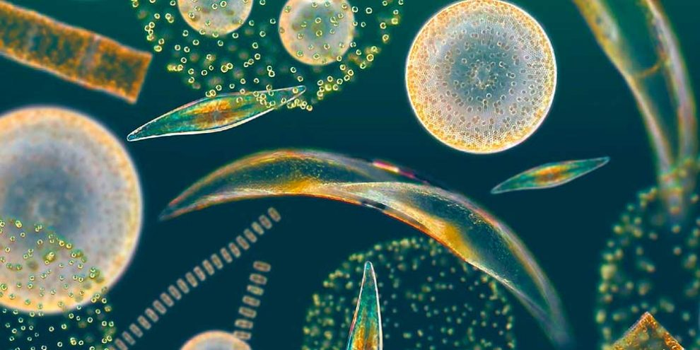

Problemática
El fitoplancton, este microorganismo autótrofo, cuya presencia en los mares data de principios de la vida. Son la base de los ecosistemas acuáticos al realizar fotosíntesis. Sin embargo, la actividad antropogénica y los contaminantes vertidos en el mar representan un peligro cuyas consecuencias todavía no son bien documentadas.
“Al experimentar el impacto de los contaminantes, su ambiente también se altera; más aún, algunos desechos de las grandes ciudades sirven de alimento a microorganismos, causando las llamadas mareas rojas”, explica Sergio Licea Durán, responsable del Laboratorio de Fitoplancton y Productividad del Instituto de Ciencias del Mar y Limnología de la UNAM.”
De acuerdo con el universitario, es indispensable estudiar a las especies de los ecosistemas marinos (su abundancia, diversidad y variación) para entender su funcionamiento. Al conocer a estos organismos se podría ayudar a obtener energía limpia mediante biocombustibles y algas.
En el planeta hay alrededor de 6 mil especies de fitoplancton, pertenecientes a 18 grupos taxonómicos.
En el laboratorio de la UNAM únicamente se resguardan dos grupos: Diatomeas y Dinoflagelados, los cuales son los más abundantes; tan sólo en el Golfo de México y el Pacífico mexicano se han registrado unas mil especies.

Debido a que el plancton fotosintético o fitoplancton es la base de las cadenas alimentarias marinas y juega un papel esencial en los ciclos de varios elementos, entre los cuales destaca el carbono por sus implicaciones en los procesos de cambio climático. Por ello, las grandes pérdidas en las poblaciones de los organismos que lo forman son cruciales.
Hasta ahora se atribuían estas pérdidas exclusivamente a procesos de sedimentación o a la depredación ejercida por el zooplancton (animales marinos microscópicos). Sin embargo, científicos españoles del Centro de Estudios Avanzados de Blanes (CSIC), liderados por Susana Agustí y que han trabajado en el buque oceanográfico Hespérides, han descubierto que también se producen grandes mortandades por causas ambientales, como los rayos ultravioleta solares (e incluso parte de la radiación visible) o la baja concentración de nutrientes, así como por infecciones virales, envejecimiento y muerte celular programada o apoptosis.
Los organismos afectados por estos procesos, que suelen consistir en una o unas pocas células, sufren la lisis o rotura de éstas, disolviéndose su contenido en el mar, lo que modifica las concentraciones y altera los ciclos de ciertos elementos. El carbono disuelto puede ser consumido por las bacterias y devuelto a la atmósfera como dióxido de carbono (CO2) en pocos días. En cambio, en los procesos de sedimentación, el carbono queda almacenado en el fondo del mar. La disminución de fitoplancton reduce además el efecto sumidero que la fotosíntesis marina tiene para el CO2 atmosférico.
La desaparición masiva de fitoplancton supone además la disminución del alimento disponible para el zooplancton, lo que repercute a su vez en todos los demás organismos marinos, reduciendo la productividad de los océanos.